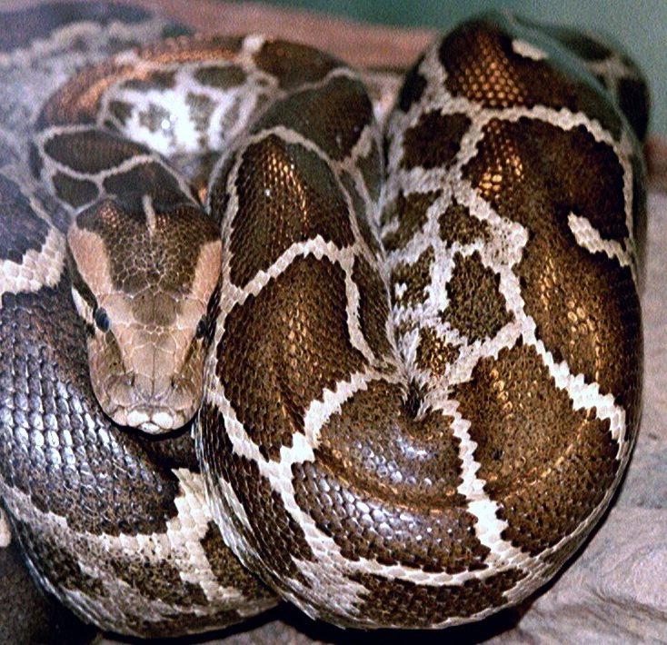

अजगरIndian Python
Python molurus · Pythonidae · REP-0016

- Scientific name
- Python molurus (Linnaeus, 1758)
- Family
- Pythonidae
- Hindi
- अजगर
- Status here
- native
- IUCN
- VU
When to look कब देखें
Present all year.
अजगर / Indian Python
Python molurus (Linnaeus, 1758) — Pythonidae
अजगर (इंडियन पाइथन / एशियन रॉक पाइथन / ब्लैक-टेल्ड पाइथन) — पूर्वी उत्तर प्रदेश के नदियों के किनारों, दलदली मैदानों, सघन झाड़ीदार जंगलों और बड़ी आर्द्रभूमियों (wetlands) के आसपास पाया जाने वाला एक बहुत ही विशाल, भारी शरीर वाला और बिना जहर का सांप (huge non-venomous constrictor snake) है। यह पूर्वी उत्तर प्रदेश का सबसे बड़ा सांप है, जिसकी लंबाई वयस्क होने पर लगभग 3 से 4.5 मीटर तक होती है। इसकी सबसे बड़ी पहचान इसके सिर के शीर्ष पर बना गहरा तीर के आकार का निशान (distinctive arrowhead pattern) और इसके पीले-भूरे रंग के शरीर पर बने बड़े, अनियमित गहरे भूरे रंग के धब्बे (asymmetric brown blotches) हैं। यह विष-रहित होता है और अपने शिकार को कुंडली में जकड़कर (constriction) मारता है। यह बड़े चूहों, खरगोशों, जंगली मुर्गियों, गोह (monitor lizards) और कभी-कभी छोटे हिरणों का शिकार करता है। यह एक अत्यंत दुर्लभ और पारिस्थितिक रूप से महत्वपूर्ण वन्यजीव है।
Legal Protection and Conservation Warning कानूनी संरक्षण और चेतावनी
[!IMPORTANT]
भारतीय अजगर वन्यजीव (संरक्षण) अधिनियम, 1972 की अनुसूची I (Schedule I) के तहत पूरी तरह संरक्षित है। इसे राष्ट्रीय स्तर पर बाघ के समान ही उच्चतम संरक्षण प्राप्त है। अजगर को मारना, चोट पहुँचाना या इसे पकड़ना एक अत्यंत गंभीर गैर-जमानती अपराध है, जिसके लिए कड़ी सजा (न्यूनतम 3 से 7 साल की कैद) और भारी जुर्माने का प्रावधान है।
हमेशा याद रखें: अजगर इंसानों के लिए खतरनाक नहीं होते हैं; ये स्वभाव से बहुत शांत और सुस्त होते हैं और छेड़े न जाने पर इंसानों पर कभी हमला नहीं करते हैं। अगर आपके गाँव या खेत के पास अजगर दिखाई दे, तो इसे मारने या पकड़ने की कोशिश न करें, बल्कि इसकी सूचना तुरंत वन विभाग (Forest Department) को दें ताकि इसे सुरक्षित रूप से बचाया जा सके। पूर्वी उत्तर प्रदेश में इसकी संख्या तेजी से घट रही है, इसलिए इसके जीवन की रक्षा करना आवश्यक है।
Quick Identification त्वरित पहचान
| Feature | Description |
|---|---|
| Size & Girth | The largest snake in UP, reaching 3.0–4.5 meters in length, with a thick, muscular body as wide as a human thigh |
| Head Pattern | Distinctive, dark, spearhead or arrowhead mark on the top of the flat pinkish-grey head |
| Body Markings | Yellowish-buff or tan body, covered with massive, dark brown, rectangular, asymmetrical blotches |
| Pupil | Vertical slit (cat-like pupil) in gold-colored eyes, with distinct heat-sensitive pits along the jaw scales |
| Tail | Short, tapering rapidly, muscular, dark blackish-brown on the underside |
Field tip: Look near wetland borders or thick sugarcane fields near riverbeds. Search for a massive, thick brown-and-yellow patterned snake basking in the sun. Inspect the head; it has a clear dark arrow shape on top. It moves slowly in a straight line (rectilinear locomotion), not in side-to-side waves.
Morphology आकारिकी
Biometrics (typical measurements of mature adults in the northern Indian plains):
| Measurement | Range |
|---|---|
| Total length | 3.0–4.5 m |
| Body girth | 15–25 cm |
| Weight | 30–55 kg |
| Mid-body scale rows | 60–75 rows |
| Subcaudal scales | 55–72 pairs |
Head and Scales: The head is distinct from the neck, covered in small, smooth scales. The snout has sensory pits on the labial scales that detect infrared heat (body heat of warm-blooded prey) in complete darkness.
Body Structure: Very muscular, skeleton has small spurs (pelvic spurs) near the cloaca which are remnants of ancient evolutionary legs.
Dentition: Lacks venom fangs; has four rows of curved, sharp teeth in the upper jaw and two rows in the lower jaw, pointing backward to hold struggling prey.
Behaviour & Ecology व्यवहार और पारिस्थितिकी
Feeding Mechanism: Non-venomous constrictor. It strikes and catches the prey with its teeth, instantly wrapping its heavy muscular coils around the prey's chest, tightening the coils every time the prey exhales until heart failure occurs, then swallowing the prey whole head-first.
Basking and Hibernation: Ectothermic, spends hours basking in the morning sun during winter near water bodies. It retreats deep into hollow trees or abandoned mammal burrows for winter hibernation.
Associated Species / Interactions संबंधित प्रजातियाँ
- Shelter relationships: Uses abandoned deep burrows of भारतीय पैंगोलिन (Indian Pangolin) and साही (Indian Porcupine) for egg-laying and hibernation.
- Predator-Prey Web: Controls populations of wild rodents and crop-damaging नीलगाय (Nilgai) fawns in forest margins.
Expected Locally स्थानीय रूप से अपेक्षित
Not a field record. Written from published accounts for eastern Uttar Pradesh. No confirmed local sighting yet — if you have seen it, that is what the atlas needs.
अभी तक स्थानीय पुष्टि नहीं। यह विवरण प्रकाशित स्रोतों से है, किसी अवलोकन से नहीं।
A rare but resident reptile in the wetland blocks of the Basti district, observed in the Harraiya and Vikramjot blocks near the Ghaghra river floodplain. Local villagers state that ajgar are occasionally found inside thick winter sugarcane fields (ganne ka khet). Farmers are increasingly aware of its protected status, and rescue calls to the Forest Department have successfully saved several individuals from mob attacks.
Distribution वितरण
Global range: Native to South Asia, found across India, Pakistan, Nepal, Bhutan, Bangladesh, and Sri Lanka.
In India: Distributed throughout all states, primarily in plains, riverine swamps, and lower hills.
In Uttar Pradesh: Distributed along major river basins, national parks, and moist crop belts.
In Basti district / eastern UP: Uncommon but resident in marshy borders.
Research Questions शोध प्रश्न
Anyone can investigate these | कोई भी इन प्रश्नों की जाँच कर सकता है
- How many hours does an adult Indian Python spend basking in the sun during the cold month of January in Basti? — Track and record daily basking periods.
- What is the primary prey choice of Pythons found near agricultural canals compared to dry scrub forests? — Document feeding records.
- Does a nesting female Python raise her body temperature through muscle shivering to incubate her eggs in winter? — Monitor nest temperature.
- How many days does a Python take to digest a fully swallowed hare before seeking food again? — Record post-feeding digestion times.
- Does the count of Python road-kills increase during monsoon months when floods cover their marshy habitats in Basti? / क्या बस्ती में मानसून के महीनों में सड़क पर मारे जाने वाले अजगरों (Road-kills) की संख्या बढ़ जाती है जब बाढ़ उनके दलदली आवासों को डुबो देती है? — Collect road survey records near wetlands.
Similar Species मिलती-जुलती प्रजातियाँ
| Species | How to tell apart | comparison |
|---|---|---|
| Russell's Viper (Daria russelii) | Much smaller (1–1.5 m); has distinctive rows of circular leaf-like spots (not random blotches); highly venomous; makes a loud hissing sound | रसेल वाइपर — छोटा आकार, गोल धब्बे, तीखा फुफकार |
| Burmese Python (Python bivittatus) | Darker; arrowhead mark on head is solid dark brown and clearly defined; blotches have clean, dark margins | बर्मी अजगर — गहरे धब्बे, साफ और गहरा सिर का तीर |
| Common Sand Boa (Eryx conicus) | Much smaller (50–75 cm); body is very stout, tail is extremely blunt; lacks arrowhead mark; smooth scales | दुमुँहा साँप — छोटा आकार, कुंद पूंछ, चिकनी त्वचा |
Field rule: Massive stout-bodied snake (3.0–4.5 m) with a prominent dark arrowhead mark on a flat head, asymmetrical brown blotches on a yellow-tan body, and cat-like vertical pupils, is the Indian Python (Ajgar).
Taxonomy & Classification वर्गीकरण
Original description. Carl Linnaeus described the Indian Python as Coluber molurus in 1753 in his Species Plantarum (later formally registered in 1758 in Systema Naturae, ed. 10, Vol. 1, p. 225). The type locality was listed as India. The genus name Python is derived from the Greek Python, the mythological giant serpent of Delphi. The specific name molurus comes from the ancient Greek word for a large snake.
Subspecies. Monotypic — no subspecies are currently recognised in the main index, as Python molurus bivittatus is now treated as a separate species (Python bivittatus).
Family and order placement. Placed in the order Squamata, family Pythonidae (python family), genus Python.
Phylogenetic notes. Python molurus represents an basal lineage of non-venomous macrostomatans (large-mouthed snakes), having retained primitive features like pelvic spurs and two lungs, while developing highly specialized infrared pit organs to hunt warm-blooded mammals in darkness.
IUCN status rationale. Assessed as Vulnerable (VU) by the IUCN Red List (assessed by the IUCN SSC Boa and Python Specialist Group). It is threatened by habitat fragmentation, road-kills, and illegal skin trade.
Photo Gallery फोटो गैलरी
References संदर्भ
- Linnaeus, C. (1758). Systema Naturae. Laurentii Salvii, Holmiae, Tenth Edition, Vol. 1, p. 225. [original description as Coluber molurus]
- Smith, M. A. (1943). The Fauna of British India, Ceylon and Burma, including the whole of the Indo-Chinese Sub-region. Reptilia and Amphibia. Vol. III (Serpentes). Taylor & Francis, London.
- Whitaker, R. & Captain, A. (2004). Snakes of India: The Field Guide. Draco Books, Chennai. [definitive Indian reptile guide]
- Barker, D. G., Barker, T. M. & Davis, M. A. (2012). The Pythons of Asia. In: Biology of the Boas and Pythons.
- World Flora Online / Reptile Database (2024). Python molurus details.
- GBIF Occurrence Data — Python molurus, India (2010–2025).
Source file: species/fauna/reptiles/indian_python.md